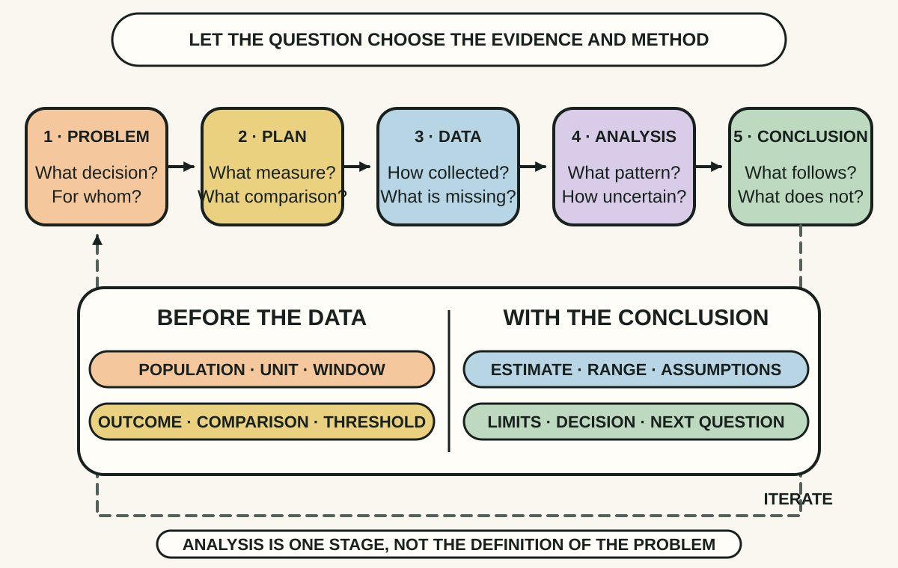
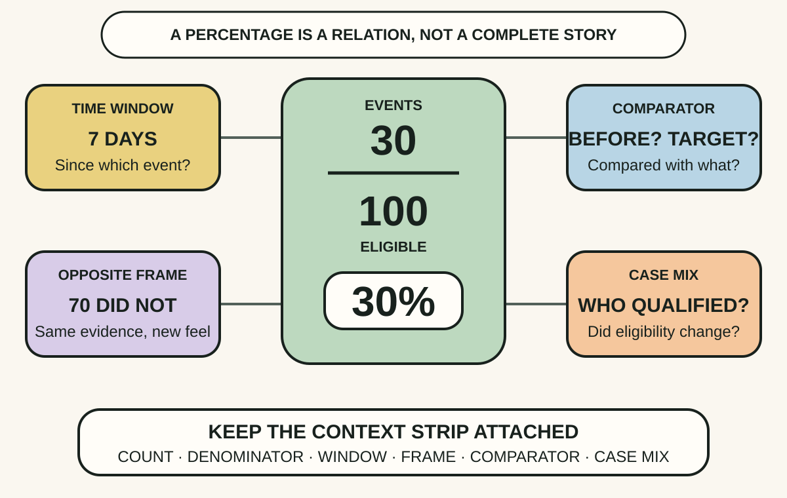
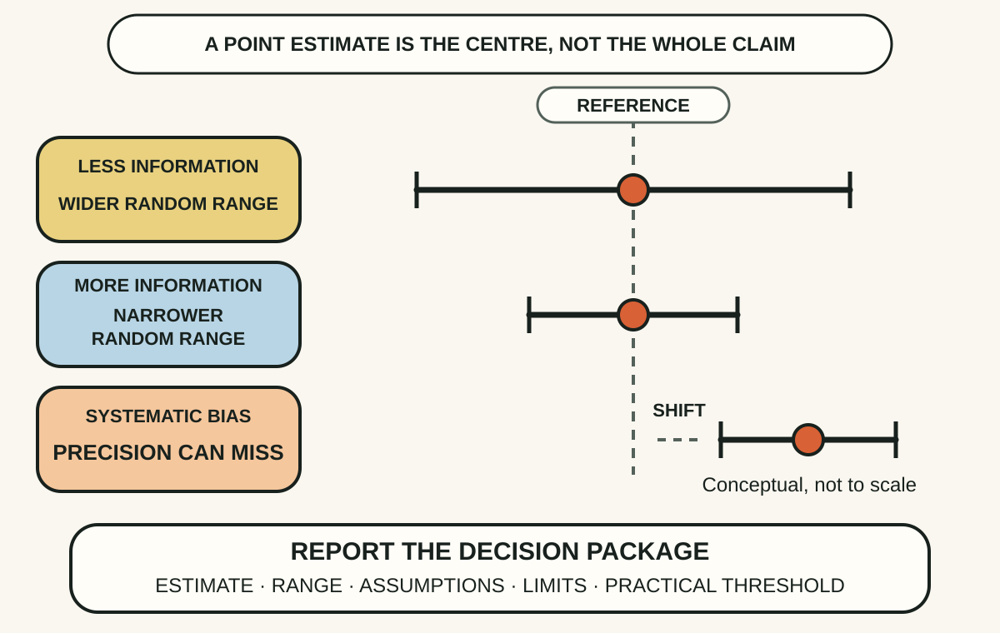

Daily lesson ·
The Art of Statistics
Learn from data without letting a clean number outrun its evidence: begin with a decision-shaped question, give every proportion its denominator and frame, then carry uncertainty and rival explanations into the conclusion.
Idea 1
Begin with the question, not the tool #
The idea
Spiegelhalter organises statistical investigation around the PPDAC cycle: Problem, Plan, Data, Analysis, then Conclusion and communication. The order makes a practical point. Analysis is one part of learning from data, not the activity that should decide afterward what question the available numbers happened to answer.
A useful problem names the population, outcome and comparison. The plan decides what will be measured, how observations enter the data and which limitations matter before results become persuasive. Data may be found rather than purpose-built, so definitions, missingness and collection changes need inspection. The conclusion returns to the original question, states what the evidence does and does not support, and usually starts a better next cycle.

Why it matters
Teams can build an accurate dashboard that answers the wrong question because an available field, convenient date range or shifting eligibility rule quietly defines the problem after the fact.
Apply it today
Take one metric request and complete: We will decide ___ for ___ by comparing ___ over ___ because ___.
Write the population, outcome and exclusion rules before opening the data. Mark any rule you cannot verify as a limitation rather than silently improvising it.
Caveat or failure mode
Real investigation is iterative. Exploration can reveal a better question, and urgent operational work may begin with imperfect found data. PPDAC should expose revisions, not turn them into procedural failure. Record when the question or plan changes so exploratory findings are not later presented as if they were predicted in advance.
Idea 2
Give every percentage its denominator and frame #
The idea
A percentage is a relationship between an event count and an eligible total. Spiegelhalter shows that the same outcome can be described through positive or negative frames, such as survival or mortality, and that percentages feel different when converted back into counts. An honest presentation makes the numerator, denominator, time window and complementary frame available when they matter.
Comparison needs more than two percentages. Different group sizes create different random variation, and different case mixes can make a raw league table unfair. A rate can move because the underlying population changed even when the process did not. The statistical task is therefore to compare like with like, or state clearly why adjustment is incomplete.

Why it matters
Conversion, defect and incident rates can improve or worsen because eligibility, traffic mix or reporting changed. A naked percentage hides the mechanism that a product or engineering decision needs.
Apply it today
Choose one percentage in a dashboard and add its event count, eligible count and exact time window.
Write the opposite frame and one case-mix difference from the comparator. If either changes the story, revise the headline before sharing it.
Caveat or failure mode
A complete denominator does not make a comparison causal or fair. Eligibility rules can still exclude inconvenient cases, administrative data can contain incompatible definitions and adjustment can omit important differences. Context improves interpretation, but it cannot rescue a measure that does not represent the decision.
Idea 3
Carry uncertainty into the conclusion #
The idea
Spiegelhalter treats estimates as outputs of a data-generating and analytic process, not exact facts. Repeated samples or measurements would vary, so a point estimate needs an interval or another honest account of random uncertainty. More relevant information can narrow that component, but it does not automatically remove measurement error, selection bias or a misspecified model.
A statistical threshold is not the conclusion. A p-value does not state the probability that a hypothesis is true, and statistical significance does not measure practical importance. A responsible conclusion combines the estimated effect, its uncertainty, the assumptions and data limitations, plausible rival explanations and the decision threshold that makes a difference worth acting on.

Why it matters
Teams overreact to small weekly movements, declare ties when a threshold is missed or treat a precise model output as certain. Carrying uncertainty and practical importance prevents false urgency and false reassurance.
Apply it today
Take one performance change and write the estimate, available uncertainty range and smallest change that would alter the decision.
Name one source of random variation and one possible systematic bias. Decide whether to act, gather better evidence or keep the current course.
Caveat or failure mode
An interval is conditional on its sampling and model assumptions and does not contain every uncertainty. Different methods support different interpretations, so do not describe a confidence interval as a probability that the fixed true value lies inside it. A narrow interval can still be centred on a biased estimate, and lack of decisive evidence does not prove that no meaningful effect exists.
Knowledge check · 6 questions
Learning check
Answer all 6, then check your answers. Your first result stays in this browser, and each explanation appears after you check. A 3-question review can appear on the homepage from tomorrow.
6 questions not yet answered.
Today's experiment · 10 minutes
Audit one dashboard claim
- Choose one number used in a current decision and write the exact decision it is meant to inform.
- Define the population, outcome, comparison and time window before looking at the chart again.
- If it is a rate, record the event count and eligible count, then write the complementary frame.
- Add the available uncertainty range. If none is defensible, write unknown and name what data would be needed.
- Name one rival explanation or case-mix change, then decide whether the evidence supports acting, measuring or holding course.
Observable result: You finish with one decision-ready claim whose question, denominator, uncertainty and leading limitation are visible, plus one explicit next action.
Retrieval practice
Spaced recall
- From Superforecasting: when would an outside-view base rate improve a local metric comparison before you inspect the special details?
- From Accelerate: why should delivery flow and instability be interpreted together rather than turning one metric into the target?
Verification
Source notes
These links support the attributed claims and edition details; applications and extensions are labelled in the lesson.
- Penguin: The Art of Statistics, publication and edition details
- Penguin: official sample including the PPDAC cycle and proportion examples
- Numeracy: Spiegelhalter introduces the book's problem-driven approach
- David Spiegelhalter: official code, data, errata and additions
- American Statistical Association: statement on statistical significance and p-values
- Royal Society Open Science: communicating uncertainty about facts and numbers
One-sentence takeaway